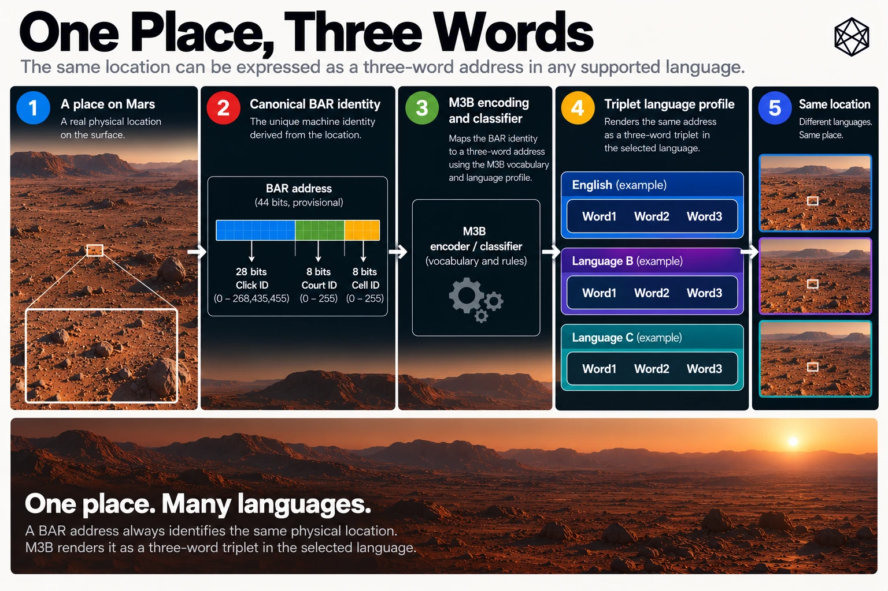
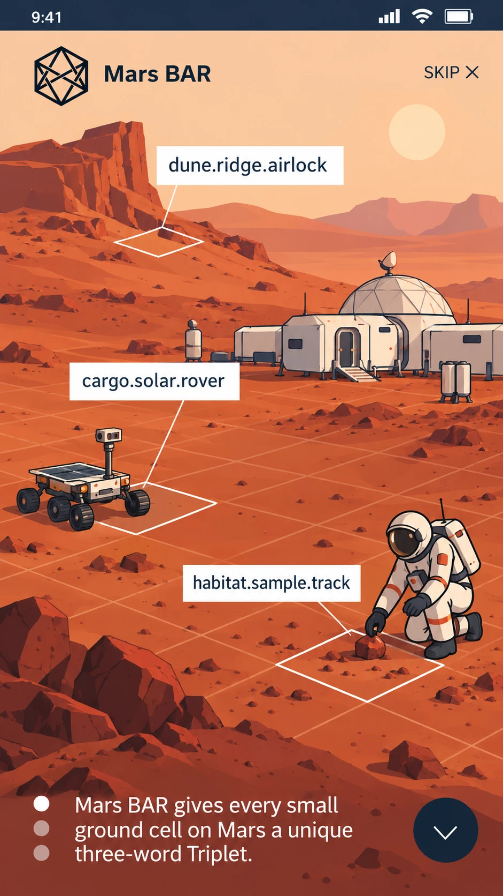

H - Triplet and M3B — Language Reference
Semantic Families, Vocabulary Engineering and Human Addressing
Mars BAR provides a deterministic machine identity for every Court and Cell on Mars. That identity is compact, reversible and independent of a central address registry. It is also poorly suited to ordinary human conversation.
A six-byte machine frame may be an excellent representation for software, but it is not an attractive destination to remember, repeat over a radio or read aloud during an emergency.
Triplet is the human-facing address layer designed to solve that problem.
It represents a BAR location through three words, while retaining the canonical machine identity underneath. The words are selected through a structured vocabulary architecture that encodes broad geographic context, distinguishes Courts from Cells and places constraints on potentially dangerous linguistic confusion.
This appendix records that architecture, including the semantic families, vocabulary evidence, proposed English lexical requirements, safety structure, reuse rules and language-profile versioning.
It also provides illustrative word candidates across all twenty-six lexical types. Those examples explain the intended semantic boundaries; they do not constitute a production dictionary or valid issued addresses.
H.1 — Mars Bar Triplet: Three Words, One Canonical Location
The visible Triplet form is:
W1 · W2 · W3
The three positions have different responsibilities.
Position | Principal responsibility |
|---|---|
W1 | Indicate one of six broad Martian latitude regions through a semantic word family |
W2 | Indicate one of six broad longitude sectors through the family appropriate to that region |
W3 | Complete the address within its deterministic decoding context and distinguish Cell-level from Court-level addresses |
The three words do not replace the underlying BAR identity.
Triplet is the public human interface. M3B is the language-classification, safety and deterministic assignment architecture beneath that interface. MB3-EN1 is the designated engineering profile for its first US-English implementation.
These distinctions matter because the systems change at different rates.
The Cell belongs to BAR:1 and inherits its geometry from MGRID:1. Its machine identity remains independent of English vocabulary, accents, pronunciation standards and future language choices.
A Triplet language profile may improve or be superseded without moving the underlying geographic location.
The fundamental relationship is therefore:
Canonical BAR identity ↔ versioned Triplet language representation
A complete language profile must support both directions. Given a valid BAR address, it must derive the corresponding three words. Given a valid issued Triplet and its declared language-profile version, it must recover exactly the same BAR address and address kind.
The first English language profile is still undergoing lexical engineering and release preparation. The architecture described here is the intended design; a complete, independently reproducible production assignment is not implied by the examples in this appendix.

H.2 — The Six W1 Semantic Families
The first word uses broad latitude to select one of six semantic families.
Four families correspond to the regular GRID Belts. The two polar Quads have their own families.
H.2.1 — W1 geographic allocation
GRID region | Latitude | W1 family |
|---|---|---|
Blue Belt | 30°–72°N | Action |
Green Belt | 0°–30°N | Living |
Gold Belt | 0°–30°S | Made |
Red Belt | 30°–72°S | Nature |
North Polar Quad | 72°–90°N | Crown |
South Polar Quad | 72°–90°S | Root |
Exact geographic boundaries follow the underlying GRID ownership rules. Thus 30°N belongs to Blue, 30°S belongs to Red, and 72° north or south belongs to the corresponding polar Quad.
The families provide broad orientation before the complete address is decoded.
An Action word signals the northern mid-latitudes. A Nature word signals the southern mid-latitudes. Crown and Root distinguish the two polar caps.
They do not describe the actual terrain or activity at an address.
An Action word does not imply that somebody is working there. A Living word does not imply that life exists in the Cell. A Nature word does not imply that the location contains natural vegetation.
These are semantic encoding categories, not geographical observations.
H.2.2 — W1 family definitions
Action contains words with direct, defensible meanings involving doing, performing, moving or undertaking activity.
Living concerns life, living beings and biological existence.
Made concerns human-made or manufactured objects, tools, materials and artifacts.
Nature concerns natural features, phenomena and the non-manufactured physical world.
Crown uses the semantic field of crowns, monarchy, sovereignty and related symbols of the upper or ruling position.
Root uses the semantic field of roots, origins, foundations, ancestry and underlying beginnings.
The exact semantic admission rules must be recorded in the released lexical profile. A word is not eligible merely because it is loosely associated with a family through an extended dictionary relationship.
A direct and reasonably familiar meaning is preferred over an obscure figurative or historical sense.
H.3 — The Six Regular W2 Families
The second word introduces broad longitudinal orientation.
GRID contains twenty-four longitude Zones, each 15° wide. For Triplet, four successive Zones form one 60° longitude sector.
Across Regular GRID, those six sectors have the following semantic families.
Longitude sector | Zones | W2 family |
|---|---|---|
0°–60°E | 01–04 | Person |
60°–120°E | 05–08 | Home |
120°–180°E | 09–12 | Settlement |
180°–240°E | 13–16 | Journey |
240°–300°E | 17–20 | Land |
300°–360°E | 21–24 | Sky |
The same six-family ordering applies in all four regular Belts.
The regular W2 families can be understood through their intended semantic domains.
Person contains people, human relationships, occupations and recognisable personal roles.
Home contains domestic environments, dwellings and the objects or spaces strongly associated with home life.
Settlement contains communities, inhabited places and the structures of collective habitation.
Journey contains travel, movement between places and the processes or experiences of making a journey.
Land contains terrestrial surfaces, landforms and recognisable types of land.
Sky contains the atmosphere, celestial appearance and phenomena commonly associated with the sky.
Together, W1 and W2 identify a broad regular Quad-sized geographic region.
For example, consider a location at approximately 41°N, 140°E.
The latitude selects Action. The longitude selects Settlement.
Its required Triplet structure is therefore:
[Action word] · [Settlement word] · [Cell word]
That is not yet an address. The complete BAR identity and the released assignment profile are required to determine the exact words.
The semantic structure is nevertheless useful. Even before full decoding, the first two words communicate enough broad geography to make some transcription or contextual errors more noticeable.
H.4 — Polar W2 Families
Polar GRID retains the same six 60° longitude sectors for the W2 language structure, although its underlying geography uses adaptive P1 subdivisions.
The two polar regions receive distinct W2 semantic families.
H.4.1 — North Polar W2
Longitude sector | W1 family | W2 family |
|---|---|---|
0°–60°E | Crown | Thought |
60°–120°E | Crown | Sound |
120°–180°E | Crown | Light |
180°–240°E | Crown | Air |
240°–300°E | Crown | Cosmos |
300°–360°E | Crown | Time |
The north-polar families are intended to be conceptually distinguishable and readily understandable.
Thought concerns cognition and ideas. Sound concerns audible phenomena. Light concerns illumination and visual brightness. Air concerns atmospheric substances, movement and related phenomena. Cosmos concerns astronomical space and celestial objects. Time concerns duration, sequence and temporal measurement.
A location at approximately 80°N, 250°E therefore has the structural form:
[Crown word] · [Cosmos word] · [Cell word]
H.4.2 — South Polar W2
Longitude sector | W1 family | W2 family |
|---|---|---|
0°–60°E | Root | Growth |
60°–120°E | Root | Soil |
120°–180°E | Root | Stone |
180°–240°E | Root | Ore |
240°–300°E | Root | Heat |
300°–360°E | Root | Core |
Growth concerns development and increasing size or maturity. Soil concerns loose surface materials associated with terrestrial soils. Stone concerns rock and stony materials. Ore concerns ore-bearing minerals and materials associated directly with extractable mineral resources. Heat concerns thermal energy and its manifestations. Core concerns centres, internal structures and essential inner parts.
For a location at approximately 80°S, 90°E, the required structure is:
[Root word] · [Soil word] · [Cell word]
As with Regular GRID, the words are not statements about the terrain. Soil does not suggest that the location contains fertile ground, and Ore does not certify a mineral deposit.
They are mnemonic namespaces linked to longitude.
At exactly 90° north or south, GRID canonicalises longitude to zero for indexing. The corresponding polar W2 family is therefore Thought at the North Pole and Growth at the South Pole.
H.5 — The Two W3 Types
W3 completes the three-word address, but it also communicates an important distinction in geographic scale.
BAR supports two fine-address objects: Courts and Cells.
They share the same Click ancestry, but they are not interchangeable. A Court is a larger area; a Cell is a smaller area inside one Court.
Triplet retains its three-word structure for both.
H.5.1 — Cell W3
A Cell Triplet identifies one BAR Cell.
The third word comes from the Cell W3 vocabulary, interpreted in the appropriate deterministic Safety Group and address context.
Cell W3 is not restricted to one broad semantic family such as Action or Soil. Its primary purpose is to supply sufficient familiar, distinct and safely reusable words for fine addressing.
A Cell Triplet therefore has the general structure:
[W1 regional word] · [W2 longitudinal word] · [Cell W3 word]
H.5.2 — Court W3: Place/Structure
A Court Triplet identifies one BAR Court rather than one Cell.
Its first two words follow the same regional semantic structure, but the third is selected from a dedicated Place/Structure vocabulary.
For example, a Court in the Gold Belt between 60° and 120°E follows:
[Made word] · [Home word] · [Place/Structure word]
The Place/Structure namespace is reserved for Court-level addressing.
A word admitted as a production Court W3 ending must not also appear as a production Cell W3 ending within the same English profile.
This exclusivity makes address-kind distinction explicit in the lexical architecture.
The word family does not establish that a Court physically contains the type of place or structure named by the word. A Court ending selected from a shelter-related vocabulary, for example, does not mean that a shelter exists at that location.
The words remain address tokens, not descriptive place names.
H.5.3 — Address-kind integrity
A Triplet decoder must recover not only the geographic machine payload but also whether the address identifies a Court or a Cell.
It must not silently interpret a Court-level Triplet as the central Cell of that Court, or assign a default Cell to make a Court address look more precise.
The distinction is part of the meaning of the address.
H.6 — Lexical Evidence and Eligibility

The first English language profile is designed as a reproducible lexical engineering exercise rather than an informal dictionary selection.
Its principal evidence resources are:
Evidence source | Principal contribution |
|---|---|
Open English WordNet | Word senses, semantic relationships and defensible family membership |
Paul Nation BNC/COCA frequency resources | Word-family frequency bands and evidence of familiarity |
CMUdict | General-American pronunciation evidence |
US-English orthographic normalisation rules | Canonical spelling, including controlled conversion from alternative forms |
Morphological, sensitivity, accent and confusion evidence | Additional screening for clarity, appropriateness and operational usability |
Each source must be versioned and recorded with its provenance. Dataset access does not automatically confer redistribution rights; the production compiler and publication package must respect the applicable source licences.
H.6.1 — Basic word-form requirements
The current English candidate rules require:
- Alphabetic canonical word forms.
- Lowercase US-English spelling.
- A minimum length of four letters.
- A recoverable lexical identity and source provenance.
- Usable pronunciation evidence.
- Sufficient familiarity for the intended general-use profile.
- Appropriate semantic evidence for W1 and W2 family admission.
- Acceptable confusion and sensitivity characteristics in the intended decoding context.
Passing the basic spelling and length rules does not make a word suitable for production.
A four-letter word may be difficult to distinguish acoustically. A common word may have too many pronunciations. A longer word may be easy to recognise but semantically unsuitable for the family in which it is proposed.
The lexical decisions must therefore be based on several forms of evidence rather than one ranking.
H.6.2 — Semantic eligibility
Semantic eligibility is especially important for W1 and W2.
A candidate must have a direct, defensible meaning within its proposed family. The evidence should identify the relevant sense rather than merely recording that the word appears somewhere in a broad association graph.
Semantic overlap is permitted where the word genuinely has more than one relevant meaning.
The same spelling might, for example, have a legitimate sense in a Made family and another in a Structure-related family. Such overlap is not automatically a defect.
Nevertheless, semantic reuse must be distinguished from semantic leakage. A word should not be placed in an unrelated family simply because the family needs additional capacity.
A shortage of eligible vocabulary is a reason to revisit candidate sourcing or review an explicitly controlled design issue. It is not permission to dilute the semantic grammar without disclosure.
H.6.3 — Familiarity
Frequency evidence helps distinguish vocabulary likely to be known by ordinary speakers from technically valid but obscure dictionary entries.
The BNC/COCA-derived evidence contributes frequency bands, morphological family information and, where the selected source supplies it, additional surface-level evidence.
It does not establish a universal number of times that each word is spoken, nor does frequency alone prove intelligibility.
A familiar word may be dangerous because it closely resembles another. An uncommon word may be distinct but difficult for a caller to recognise or spell.
The production vocabulary should balance familiarity, meaning and safe pronunciation, with difficult cases subject to explicit review.
H.6.4 — Pronunciation
CMUdict provides a reproducible General-American pronunciation baseline.
For each candidate, the lexical ledger should preserve the available pronunciation forms and the transformations or assumptions used during comparison.
Exact homophones must not compete for distinct meanings within the same active decoding context.
Near-homophones require additional analysis. One-phoneme differences, stress changes, spelling resemblance, morphological similarity and accent-dependent mergers all matter.
General-American pronunciation data is a starting point, not a complete description of English as spoken by people from different countries or backgrounds.
A profile intended for planetary use must ultimately be tested against a wider range of speakers, recording conditions and speech-recognition systems.
H.7 — Safety Colours, Signatures and Groups
The semantic families provide broad geographic context. M3B adds a more detailed system intended to reduce dangerous address confusion.
The concern is not merely that a person might mishear a word. It is that the mistaken word might resolve to a different but superficially valid address close to the intended destination.
That possibility matters particularly in dispatch and emergency operations.
H.7.1 — Safety Colours
The M3B design assigns each GRID Click a deterministic Safety Colour.
The architecture uses sixteen colours as encoding states. They are not colours painted on the Martian surface or additional geographic regions.
Their intended property is to distinguish directly neighbouring Clicks so that local address confusions can be managed through separate lexical contexts.
The actual colouring algorithm and its complete adjacency proof must be preserved in the technical profile. The sixteen-colour structure is a defined design objective; its full conformance evidence, including the precise treatment of polar topology and T-junctions, must accompany the production release.
H.7.2 — Safety Signatures
Within a Click, finer position contributes to the address's Safety Signature.
The Click's Safety Colour and relevant fine-address state establish the context used by the lexical assignment mechanism.
This allows the same written word to be interpreted differently where the decoding context makes the intended meaning unambiguous, while constraining words that could compete dangerously.
The complete Safety Signature calculation must be published as a deterministic algorithm or an equivalently exact reference specification before a production language profile can be declared independently decodable.
H.7.3 — Safety Groups
The current English architecture uses:
Lexical position | Safety Groups |
|---|---|
W1, per semantic family | 32 |
W2, per semantic family | 32 |
Cell W3 | 1,024 |
Court W3 | 8 |
Safety Groups provide the units within which vocabulary is tested, packed and interpreted.
They also permit controlled reuse across different contexts without requiring every word used anywhere on Mars to be globally unique.
H.7.4 — Confusability management
M3B uses a layered confusability model, including pronunciation, spelling, morphology, accent behaviour and, where available, speech-recognition results.
Potentially confusable words can be represented as connected relationships in a graph. Packing and replacement rules then constrain how those words are distributed among Safety Groups.
The intended design places dangerous alternatives into controlled safety contexts rather than scattering them arbitrarily across geographic states that might correspond to neighbouring locations.
That strategy must not be confused with allowing two indistinguishable words to compete inside the same active decoder namespace.
Where two spellings have the same pronunciation and cannot be distinguished by the surrounding context, they cannot both be assigned to different meanings in that context.
The release compiler must prove the relevant uniqueness and safety properties for the actual frozen vocabulary and assignment, not merely state them as intentions.
H.8 — Membership Capacity and Reuse Policy
The complete English lexical architecture requires many more positional word memberships than an ordinary reading of the three-word format might suggest.
A membership is one lexical position in a particular family, group or decoding context. It is not necessarily a distinct spelling.
This distinction is central to the feasibility of the system.
H.8.1 — Required membership structure
Vocabulary layer | Structural allocation | Required memberships |
|---|---|---|
W1 Action | 32 groups × 189 | 6,048 |
W1 Living | 32 groups × 135 | 4,320 |
W1 Made | 32 groups × 135 | 4,320 |
W1 Nature | 32 groups × 189 | 6,048 |
W1 Crown | 32 groups × 91 | 2,912 |
W1 Root | 32 groups × 91 | 2,912 |
W1 total | 26,560 | |
Regular W2 | 6 families × 32 groups × 90 | 17,280 |
Polar W2 | 12 families × 32 groups × 12 | 4,608 |
Cell W3 | 1,024 groups × 35 | 35,840 |
Court W3 | 8 groups × 32 | 256 |
Total | 84,544 |
These are planned positional memberships, not 84,544 independently required English spellings.
They also are not the number of actual Triplet addresses. The full addressable BAR domains contain billions of Courts and trillions of Cells; the finite lexical architecture must be shown to cover those domains through a deterministic, collision-free assignment.
H.8.2 — Permitted reuse
The English design permits reuse where the decoder already possesses enough context to distinguish the intended membership.
The principal rules are:
Across semantic or positional namespaces: The same spelling may be considered for different families or roles when its sense and decoding context justify it.
Within one active decoding group: Exact duplicate spellings are forbidden. A word cannot represent two different entries in a context where the decoder has no way to distinguish them.
Across regular W2 families: Reuse is permitted where direct semantic senses support each family and the decoder remains unambiguous.
Across Cell W3 Safety Groups: Reuse is permitted because the appropriate group is established through the deterministic context before the W3 word is interpreted.
Between Court W3 and Cell W3: Reuse is forbidden in the production English profile. The Place/Structure Court vocabulary must remain exclusive.
The current Cell W3 compiler design normally targets reuse of a distinct spelling across no more than four Safety Groups, with a controlled fallback limit of five.
Those are compiler constraints and design targets, not an instruction to reuse each word that many times.
H.8.3 — Why reuse matters
English has a large vocabulary, but the subset of words suitable for a globally usable spoken address system is much smaller.
The candidate must survive spelling, semantic, familiarity, pronunciation, confusion and sensitivity checks. Several lexical families also compete for the same natural vocabulary.
If every required membership had to use a globally unique spelling, the compiler could be forced towards increasingly obscure, technical or linguistically fragile choices.
Contextual reuse reduces that burden without weakening determinism, provided the precise decoder context is published and injectivity is demonstrated.
The benefit is substantial, but it creates an obligation: the profile must prove that a repeated surface word can never cause two different active addresses to decode as the same issued Triplet.
H.9 — Court Vocabulary Exclusivity
Court W3 warrants separate treatment because it is an address-kind distinction, not simply another semantic family.
The proposed English profile requires:
256 Court W3 memberships, arranged as eight Safety Groups of thirty-two.
The production Court vocabulary consists of 256 distinct Place/Structure word forms.
Every Court-ending word must be excluded from Cell W3 membership throughout that language profile.
That rule holds even if the same word would otherwise be attractive as a Cell ending.
It is therefore insufficient to exclude the word only from the particular Cell Safety Group in which it currently appears. The exclusivity applies across the Court/Cell W3 boundary for the entire released profile.
A Court Triplet must resolve to a Court36 payload. A Cell Triplet must resolve to a Cell44 payload.
The decoder may not guess the address kind based on the user's apparent intentions, nor silently choose a smaller address when the words identify a larger one.
The address-kind boundary is part of the meaning of the language profile.
H.10 — Illustrative Vocabulary Candidates
The following tables provide ten words for each of the twenty-six lexical types in the proposed English architecture.
Status key
IC — Illustrative Candidate: An editorial example proposed to demonstrate the intended semantic family or W3 role. It has not been admitted to an approved production inventory, individually certified against the complete frozen lexical sources, cleared through the relevant Safety Group or allocated to a BAR identity.
Every word in Tables H.10.1–H.10.5 has status IC. None is marked accepted, production-frozen or released.
The examples use lowercase alphabetic spellings of at least four letters, but that visible compliance is only a preliminary form check. Some candidates, especially in narrower technical families such as Ore, may fail familiarity or other later checks.
H.10.1 — W1: Six geographic families
Family | Ten illustrative candidates — all IC |
|---|---|
Action | carry, build, climb, drive, gather, repair, sprint, deliver, assemble, launch |
Living | animal, creature, mammal, insect, fungus, organism, human, seedling, wildlife, bacteria |
Made | engine, fabric, vessel, hammer, tablet, basket, circuit, lantern, machine, pottery |
Nature | canyon, river, desert, glacier, valley, meadow, volcano, ocean, prairie, waterfall |
Crown | monarch, throne, royal, regent, prince, queen, duchess, emperor, scepter, sovereign |
Root | origin, source, lineage, ancestor, heritage, foundation, genesis, trunk, taproot, basis |
The W1 examples show the broad character intended for each family.
Some are straightforward: carry is readily associated with Action; hammer with Made; canyon with Nature.
Other semantic families require more careful interpretation.
Crown and Root are intentionally broader than one concrete physical object. A word such as sovereign has a defensible relationship to Crown, while lineage and origin are associated with the meanings of Root.
These are plausible semantic examples, not findings that the words satisfy the final familiarity or acoustic requirements.
H.10.2 — Regular W2: Six longitude families
Family | Ten illustrative candidates — all IC |
|---|---|
Person | parent, child, friend, doctor, artist, pilot, teacher, sailor, neighbor, mentor |
Home | bedroom, kitchen, doorway, hearth, pillow, carpet, cottage, dwelling, fireplace, curtain |
Settlement | village, city, hamlet, township, suburb, borough, colony, district, outpost, neighborhood |
Journey | voyage, passage, transit, journey, departure, arrival, crossing, migration, expedition, excursion |
Land | island, pasture, hillside, plateau, peninsula, terrain, continent, farmland, shoreline, lowland |
Sky | cloud, horizon, sunrise, sunset, twilight, aurora, rainbow, atmosphere, starlight, weather |
These families are deliberately familiar in concept. A listener does not have to know the complete M3B vocabulary to understand the difference between a word about a person and a word about the sky.
That conceptual separation provides a potential human error cue.
It does not replace decoder validation. A word can have several meanings, and lexical overlap must be evaluated in the full profile rather than treated as impossible.
H.10.3 — North Polar W2: Six specialised families
Family | Ten illustrative candidates — all IC |
|---|---|
Thought | idea, memory, concept, reason, insight, theory, notion, logic, wisdom, reflection |
Sound | melody, rhythm, echo, chorus, whisper, harmony, murmur, applause, cadence, chime |
Light | candle, beacon, sunlight, sparkle, shimmer, radiance, brightness, glimmer, glowing, gleam |
Air | breeze, gust, oxygen, airflow, vapor, balloon, pressure, inhale, windward, airborne |
Cosmos | galaxy, nebula, asteroid, comet, meteor, orbit, planet, universe, stellar, satellite |
Time | minute, second, decade, century, season, moment, midnight, morning, calendar, duration |
The specialised polar families create distinguishable semantic characters within the already distinct Crown and Root regions.
A word can be thematically appropriate without being operationally suitable.
For example, some astronomical terms may be familiar to science professionals but less familiar to general speakers. Some apparently ordinary words may also have multiple senses or regional pronunciation variations.
Those issues belong to lexical qualification, not to the geographic partition.
H.10.4 — South Polar W2: Six specialised families
Family | Ten illustrative candidates — all IC |
|---|---|
Growth | sprout, blossom, mature, flourish, expand, increase, enlarge, evolve, thrive, develop |
Soil | topsoil, loam, humus, compost, mulch, clay, peat, silt, dirt, subsoil |
Stone | granite, basalt, marble, slate, limestone, pebble, boulder, flint, shale, sandstone |
Ore | hematite, bauxite, magnetite, pyrite, galena, malachite, cinnabar, ilmenite, cassiterite, chalcopyrite |
Heat | warmth, ember, furnace, flame, blaze, simmer, boiling, scorch, ignite, thermal |
Core | center, middle, nucleus, kernel, heart, innermost, central, interior, essence, backbone |
The Ore examples expose an important issue in vocabulary engineering.
The family has a narrower technical meaning than categories such as Person or Journey. It is relatively easy to identify mineral names with direct semantic relationships to ores, but considerably harder to establish that all of them are familiar, easy to pronounce and suitable for an ordinary spoken address.
Several words in the Ore row may therefore be unsuitable for production despite their defensible semantic relevance.
The row is included as a demonstration of the candidate problem, not as a claim that ten approved Ore words have been found.
A rigorous compiler should report such difficulty explicitly rather than fill a deficit with weak associations or obscure vocabulary without review.
H.10.5 — W3: Cell and Court types
Type | Ten illustrative candidates — all IC |
|---|---|
Cell W3 | apple, button, dancer, feather, guitar, lemon, pocket, violin, velvet, zipper |
Court W3 — Place/Structure | station, shelter, hangar, depot, garage, tower, workshop, courtyard, pavilion, warehouse |
The Cell W3 examples are deliberately drawn from a variety of ordinary semantic fields. Cell W3 is primarily a fine-address vocabulary, not another broad geographic category.
The Court examples are place or structure terms suitable for illustrating the separate Court ending.
If selected for production, the Court words would be reserved to the Place/Structure namespace and excluded from Cell W3 everywhere in that language release.
No word in either illustrative W3 list is treated as a valid issued ending at this stage.
H.11 — Rejection and Review Examples
A vocabulary compiler must preserve reasons for exclusion and uncertainty. A rejected word should not simply disappear from an undocumented list.
The examples below demonstrate different rejection and review classes.
Some illustrate rules that can be applied mechanically. Others identify conditions that require context or human judgement. They are not claimed to be the final verdicts of a completed MB3-EN1 production compiler.
H.11.1 — Rejection and review table
Word or pairing | Proposed context | Status | Reason |
|---|---|---|---|
run | Action | Reject | Only three letters; below the four-letter minimum |
sky | Sky | Reject | Only three letters, despite direct semantic eligibility |
ore | Ore | Reject | Only three letters, despite naming the family |
red | Any position | Reject | Only three letters |
colour | Canonical English profile | Normalise | British spelling requires controlled conversion to US color, followed by collision checking |
centre | Core | Normalise | British spelling requires controlled conversion to US center |
plane / plain | Same decoding context | Mutual exclusion | Exact or effectively indistinguishable pronunciations cannot carry competing meanings |
course / coarse | Same decoding context | Mutual exclusion | Homophones; both must not compete as different entries |
root / route | Confusable context | Accent review | The pronunciations overlap in some English accents |
wind | Air | Pronunciation review | Multiple ordinary pronunciations and senses |
read | Thought | Pronunciation review | Present- and past-tense pronunciations differ |
forest | Action | Reject for family | Natural-feature meaning does not provide a direct Action classification |
colony | Stone | Reject for family | No sufficiently direct ordinary Stone meaning |
NASA | Any family | Reject as submitted | Uppercase proper acronym; fails the ordinary canonical lexical-form policy |
malachite | Ore | Familiarity review | Direct mineral relevance, but general familiarity and spoken usability require evidence |
chalcopyrite | Ore | Familiarity review | Specialist technical term likely to require careful familiarity and pronunciation review |
hangar | Cell W3, if reserved for Court W3 | Reject for Cell role | Court/Cell W3 exclusivity prohibits cross-role production reuse |
café | Canonical US-English profile | Normalisation review | Accented form requires an explicitly permitted normalization rule; it cannot be silently rewritten |
fare / fair | Same decoding context | Mutual exclusion | Confusable homophone pair |
bough | Nature | Pronunciation/familiarity review | Legitimate word, but less straightforward pronunciation and spelling recognition for general users |
Reject means the submitted form or family role violates a stated eligibility rule.
Mutual exclusion means the two words cannot compete within one decoding context; it does not necessarily ban both spellings globally.
Normalise means the form requires an authorised canonical conversion and subsequent collision checks, not that it automatically becomes a production word.
Review means the example raises a legitimate concern but should not be declared definitively acceptable or unacceptable without the relevant evidence.
This distinction is important. Mechanical rejection, contextual incompatibility and human uncertainty are different problems and should leave different records in the release ledger.
H.12 — The Vocabulary Release Compiler
The full English vocabulary is too large and too constrained to be completed reliably by manually selecting words one at a time.
The proposed MB3-EN1 production process therefore uses a deterministic Vocabulary Release Compiler.
Its purpose is to transform controlled lexical sources and explicitly approved rules into an auditable language profile.
The main stages are:
- Freeze source versions, provenance, checksums and licensing information.
- Normalise canonical US-English word forms.
- Join semantic, frequency, pronunciation and morphological evidence into a master lexical ledger.
- Score eligibility for W1, regular W2, polar W2, Cell W3 and Court W3.
- Exclude mechanically invalid forms and queue uncertain cases.
- Construct pronunciation, spelling, accent and other confusability relationships.
- Apply the exact Safety Colour, Safety Signature and Safety Group rules.
- Test membership capacity and distinct-word headroom in every required decoding context.
- Pack valid candidates and reserves into reproducible Safety Groups.
- Freeze the deterministic assignment only after lexical and safety checks pass.
- Build forward and inverse encoders with independent conformance tests.
- Publish the complete immutable profile with the required evidence, permissions and hashes.
H.12.1 — The master lexical ledger
The ledger is the central evidence record.
Each candidate should preserve, at minimum, its canonical spelling, source spellings, lemma, morphological family, semantic evidence, pronunciation forms, frequency information, orthographic normalization, confusion relationships, Court/Cell role eligibility, review status and provenance.
This allows a rejected or accepted membership to be traced back to the evidence and rule responsible for the decision.
It also avoids a common weakness in large vocabulary projects: a final word list whose construction can no longer be explained or reproduced.
H.12.2 — Reserve vocabulary
Production lists should not be populated to their exact minimum capacity without replacement options.
A word that appears suitable during initial screening may later prove troublesome in radio tests, accent studies or actual use.
The compiler therefore maintains reserve candidates for affected families and groups.
Where a production word must be replaced, the change should be controlled, documented and tested. It should not trigger an uncontrolled reshuffling of the complete planetary assignment.
The current compiler design targets surplus candidate capacity before final allocation, although the exact reserve and repair policies remain matters for the controlled profile specification.
H.12.3 — Human editorial review
The intent is not to remove human judgement. It is to reserve human effort for decisions that need it.
Automated processing can reject malformed words, count memberships, detect many pronunciation conflicts and expose weak semantic associations.
Human reviewers are better placed to assess unfamiliarity, cultural sensitivity, awkward pronunciation, implausible semantic classification and cases where formal metrics disagree with likely human experience.
A practical objective is to make such cases a relatively small exception queue rather than treating every required membership as a separate manual editorial decision.
The production process must nevertheless fail rather than silently weaken an approved lexical or safety rule when sufficient eligible vocabulary cannot be found.
H.13 — Assignment and Reversible Decoding
Qualifying the vocabulary is not the same as assigning every BAR address a Triplet.
Once the lexical material has passed the required gates, the assignment system must provide a deterministic mapping between canonical machine addresses and their issued word triples.
For a frozen profile P, the intended relationships are:
encode(P, address_kind, BAR_payload) → W1 · W2 · W3
decode(P, W1 · W2 · W3) → (address_kind, BAR_payload)
The two functions must agree in both directions for every valid issued address.
A complete language release must demonstrate that no two valid addresses in its stated domain acquire the same canonical issued triple.
H.13.1 — Assignment Salt
The design includes a public Assignment Salt used by the deterministic allocation mechanism after the valid vocabulary and safety structure have been established.
The salt is not a secret key and does not authenticate the address.
Its purpose is reproducibility: the same frozen release inputs should produce the same lexical assignment independently of local software iteration order, source retrieval timing or accidental ordering differences.
The salt should be frozen only after lexical qualification, capacity and safety checks have passed.
The released algorithm and the salt must both be public if independently reproducible, offline Triplet encoding is to be achieved.
H.13.2 — Coverage proof
The fact that three vocabularies contain a large number of theoretical word combinations is not enough to establish complete BAR coverage.
The profile must account for the actual semantic divisions, Safety Groups, assignment constraints, reuse policy and separate Court/Cell domains.
It must demonstrate that every valid Court and Cell can be assigned a unique Triplet under those rules and that the assignment remains invertible.
This requires a formal capacity and collision analysis for the relevant decoding contexts, not merely multiplication of total dictionary sizes.
The complete production rank/unrank algorithms, issued assignment tables and proofs remain part of the language-profile release work.
H.14 — Language Profiles and Versioning
Triplet is intended to support multiple languages without changing the underlying BAR location.
MB3-EN1 is the first proposed US-English profile. It should not become an implicit requirement that future Martians use English.
A Spanish, Arabic, Mandarin or other language profile should be designed using its own lexical frequency, phonology, morphology, script and confusion evidence.
Directly translating the English Triplet word by word would not preserve those properties.
Different languages may therefore represent the same Cell through entirely different words.
The geographic identity remains the same because both language profiles resolve to the common BAR payload.
H.14.1 — Immutable language releases
A deployed vocabulary release must identify the exact word inventory, semantic memberships, Safety Groups, normalization conventions, assignment rules and decoding behaviour under which its Triplets were issued.
Changing those mappings in place would make historic three-word addresses ambiguous or incorrect.
Corrections that change word-to-address meaning must therefore be published as a distinct immutable lexical release, with the previous release remaining decodable.
This language versioning is independent of geometry versioning. An English word assignment can change while the underlying Cell44 remains unchanged.
H.14.2 — Context required for decoding
A bare three-word string is not sufficient for universally reproducible decoding unless the interpreting system already knows which immutable language release is being used.
The complete decoding context should identify:
- The language profile and immutable lexical release.
- The applicable BAR and MGRID versions.
- The required civil reference context.
- The distinction between Court and Cell addresses, recovered through the profile's validated grammar.
- Any relevant canonical text encoding and normalization conventions.
The precise external Triplet wire envelope remains to be ratified. It should not be confused with BAR-JSON:1, which is the already defined contextual transport for canonical machine addresses.
A safe decoder must reject unknown, inconsistent or mixed language profiles rather than guessing a plausible interpretation.
H.14.3 — Safe human interaction
A language profile can reduce confusion risk, but it cannot guarantee that spoken addresses will always be understood.
Safety-critical software should not silently autocorrect a questionable Triplet into a different valid destination.
Where an address is unexpected, a system may use independent contextual information — such as a known operational region, a stored BAR identity or an approximate measured location — to flag a possible problem and request confirmation.
Semantic geography can provide a useful clue. It is not authentication.
The final human interface requires testing with actual speakers, accents, channel conditions and operational tasks before claims of reliable emergency performance can be justified.
H.15 — Publication and Conformance Material
A production MB3-EN1 release should include sufficient material for a second implementation to reproduce and inspect the mapping without dependence on a central Triplet service.
The controlled technical repository should contain:
Artifact | Purpose |
|---|---|
Source and rights manifest | Records source versions, hashes, attribution and redistribution permissions |
Canonical lexical ledger | Preserves each word's source evidence and qualification status |
Semantic family assignments | Records W1/W2 classifications and supporting senses |
Pronunciation and familiarity records | Documents acoustic and ordinary-use evidence |
Confusability relationships | Records word pairs and graph constraints used for safety screening |
Safety Colour and Signature specification | Defines the deterministic geographic safety state |
Safety Group membership tables | Identifies production and reserve words in each decoding context |
Court W3 inventory | Contains the exclusive 256-word Place/Structure vocabulary |
Cell W3 inventory | Contains the production Cell-ending memberships |
Assignment algorithm and salt | Makes issued Triplets independently reproducible |
Profile release identifier and hash | Identifies the exact immutable language release |
Positive and negative test vectors | Establishes expected encoding, decoding and rejection behaviour |
Capacity and collision proofs | Demonstrates complete coverage of the relevant BAR domains |
Independent implementations | Tests cross-language interoperability and offline operation |
Publication of these files is subject to the applicable source-data licensing and rights review. The fact that a lexical resource can be consulted publicly does not necessarily mean its contents can be republished wholesale under the Matlas project's preferred licence.
The architecture, compiler rules, generated assignments and third-party lexical source rights must therefore be distinguished.
H.16 — What Triplet Does Not Do
Triplet is not a planetary place-naming authority.
A three-word address may sound memorable, but the words are not intended to become the cultural name of the terrain they identify.
Martians may develop names for cities, neighbourhoods, streets, buildings, mountains, industrial sites and countless informal local places. Those names will carry social and historical meaning that an address protocol cannot manufacture.
Triplet provides a common way to communicate a location when local geography is absent, unknown or incompatible between systems.
It is also not a surveying system, a navigation system, a guarantee of speech intelligibility or a substitute for the canonical machine identity.
The three-word form is most useful when a human needs to say, remember or exchange a BAR location. Software should retain the underlying BAR address as the authoritative spatial identity wherever exact machine interoperability is required.
The distinction allows human language to evolve without moving the planet underneath it.
H.17 — Language Reference Summary
Property | Triplet/M3B design |
|---|---|
Human address format | Three words: W1 · W2 · W3 |
Canonical underlying identity | BAR Court36 or Cell44 |
Language architecture | M3B |
First English profile identifier | MB3-EN1 |
W1 semantic families | 6 |
Regular W2 families | 6 |
North Polar W2 families | 6 |
South Polar W2 families | 6 |
W3 types | Cell and Court Place/Structure |
Total lexical types | 26 |
Safety Colours | 16 |
W1 Safety Groups per family | 32 |
W2 Safety Groups per family | 32 |
Cell W3 Safety Groups | 1,024 |
Court W3 Safety Groups | 8 |
Required lexical memberships | 84,544 |
Court W3 exclusivity | Mandatory |
Context-dependent word reuse | Permitted under defined decoder constraints |
Assignment Salt | Public and deterministic |
Language-profile releases | Immutable and separately versioned |
Complete MB3-EN1 production dictionary | Not yet released |
Example-word status in this appendix | Illustrative candidates only |
Triplet completes the conceptual transition from measured ground to communicable address.
GRID identifies a persistent part of Mars. BAR refines that location to a Court or Cell and gives it a reversible machine identity. M3B adds a structured language layer intended to make the same identity practical for human exchange.
Its first word provides broad latitude context. Its second word provides broad longitude context. Its third completes the address while distinguishing Court and Cell use.
The semantic structure supplies recognizable geographical clues, while lexical engineering and Safety Groups seek to reduce the risk of confusing one valid destination with another.
Those benefits depend on the eventual quality of the language release. A dictionary that merely contains enough words is not sufficient. The words must be eligible, familiar, defensibly classified, reasonably pronounceable, appropriately separated and assigned through a deterministic mapping that can be reproduced independently.
The resulting architecture is deliberately layered.
The place is canonical. The words are an interface.
That separation permits the geography to remain persistent while the language used to describe it becomes more useful, more diverse and better tested.
It also preserves the principle running through Matlas as a whole:
We name the grammar. Martians name the places.
Elon says… “Send me your Mars Bar!”